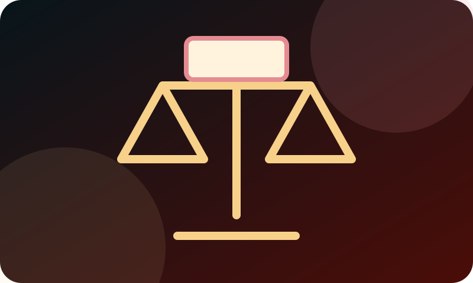

01
Koji dokument ste dobili?
Pročitajte naslov dokumenta i zapišite broj predmeta, pošiljaoca i datum koji se u njemu navodi.
Informacija pre odluke
Pre nego što pretpostavite šta će se dogoditi, proverite koji ste dokument dobili, kada ste ga primili, koji rok je naveden i koje podatke treba sačuvati.
Šta prvo proveriti
Dokumenti o izvršenju mogu sadržati više datuma, iznosa i oznaka. Jedan pogrešno shvaćen podatak može napraviti dodatnu zabunu. Zato je korisno sačuvati celu dokumentaciju i napraviti miran pregled osnovnih činjenica.
Ova stranica je informativna. Ne utvrđuje da li je konkretan postupak zakonit, da li je dug zastareo ili koji pravni lek treba primeniti. Za takvu procenu potrebna je provera konkretnog predmeta i, kada je potrebno, stručna pomoć.


Prava i rokovi
Saznajte šta treba proveriti, koje papire sačuvati i kada je važno potražiti stručnu pomoć.
01
Pročitajte naslov dokumenta i zapišite broj predmeta, pošiljaoca i datum koji se u njemu navodi.
02
Sačuvajte kovertu ili drugi trag o prijemu. Datum prijema može biti važan za razumevanje rokova.
03
Odvojite iznos, rok, način postupanja i posledicu koja je navedena u dokumentu. Ne oslanjajte se na pretpostavke.
Kada tražiti dodatnu pomoć
Ako dokument pominje prigovor, žalbu, obustavu, popis, prodaju ili drugi rok za postupanje, sačuvajte ga i potražite odgovarajuće stručno objašnjenje. Na vreme pripremljene informacije olakšavaju razgovor i smanjuju mogućnost da se važan podatak izgubi.
Prvi kontakt ne znači da morate unapred znati pravni naziv problema. Dovoljno je da opišete šta ste dobili i kada.
Pažljivo sa podacima
Ne objavljujte javno JMBG, broj lične karte, broj računa, potpis ili celo rešenje. Za početni razgovor obično je dovoljno opisati problem i navesti osnovne podatke bez nepotrebnog otkrivanja identiteta.
Važno: sadržaj je informativan i ne predstavlja pravni savet niti garanciju ishoda. Konkretan slučaj zahteva proveru dokumenata, rokova i svih okolnosti.